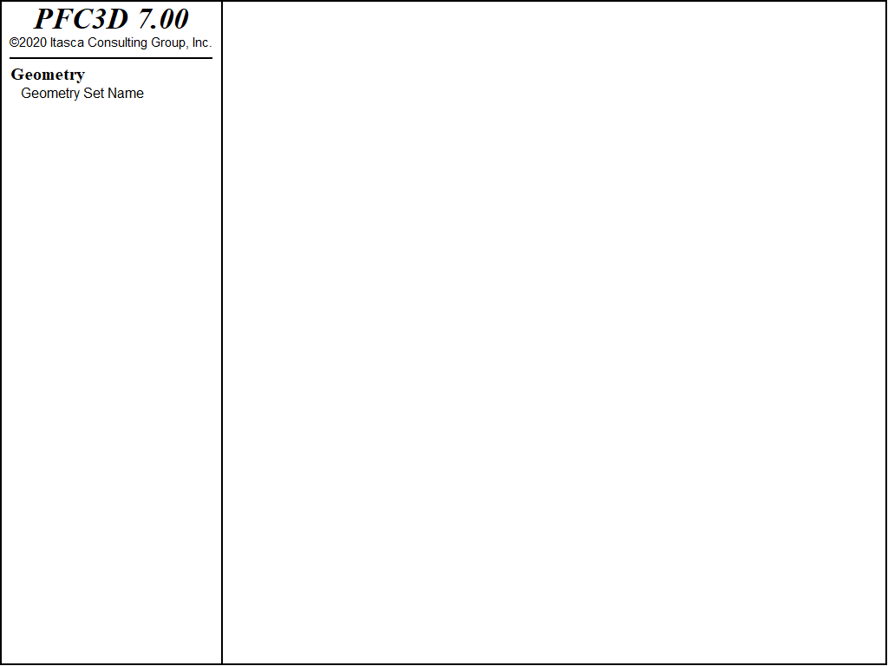

clump export 命令
语法
- clump export keyword <range>
主要关键字：
导出刚性簇。若未指定范围，则导出模型中的所有刚性簇。 目前只能将刚性簇导出到几何集。
- geometry keyword
-
- set s
将几何集基本名称设置为 s。若指定 split 关键字，则每个刚性簇导出到专用几何集，其名称由基本名称后附加单词 颗粒簇（clump） 和刚性簇 ID 组成（例如，基本名称为 我的集合（myset）、刚性簇 ID 为 1 时，名称为 ‘myset_clump1’）。请注意，此时会覆盖同名的现有几何集。否则，所有刚性簇导出到一个名为 s 的唯一几何集，且不删除该几何集中的现有几何对象。 默认几何集基本名称为 set。
- split
若指定 split 关键字，则每个刚性簇导出到专用几何集。默认情况下，所有刚性簇 导出到一个唯一几何集（见上文）。
用法示例
clump export 命令可用于将球颗粒的三角化表示导出到几何集。几何集随后可直接用于
后处理，或导出为 STL 文件以供第三方 CAD 软件使用。
有关几何逻辑的详细信息见此处（here）。
以下示例根据预定义刚性簇模板生成 10 个刚性簇，并使用默认参数执行 刚性簇导出几何（clump export geometry） 命令。
刚性簇模板 岩石 1（rock1） 使用表面描述定义，而刚性簇模板 岩石 2（rock2） 未使用表面描述。
因此，与 岩石 1（rock1） 关联的刚性簇使用可用的表面描述导出，而与 岩石 2（rock2） 关联的刚性簇使用
每个子颗粒的几何表示导出（默认分辨率为 0.25）。所有刚性簇导出到一个唯一几何集
（默认标记为 clumps），如 图 1（Figure 1） 所示。该几何集最终导出为 ASCII-STL 文件。
model domain extent -5 5
geometry import 'rock1.stl'
clump template create name 'rock1' ...
geometry 'rock1' ...
calculate-surface ...
bubblepack ratio 0.3 distance 100
clump template create name 'rock2' ...
pebbles 3 ...
0.5 -0.25 0.0 0.0 ...
0.5 0.25 0.0 0.0 ...
0.5 0.0 0.0 0.25 ...
calculate-pebbles
model random 10001
clump generate size 1 2 number 10 template 2 'rock1' 0.5 'rock2' 0.5
clump export geometry
geometry set 'clumps'
geometry export 'clumps.stl' format stl


图 1：使用默认参数时，若没有可用的表面描述，刚性簇导出几何（clump export geometry） 命令会以 0.25 的分辨率生成子颗粒的三角化表示。否则使用表面描述。
下面的示例构建与上面相同的模型，但改变了控制 刚性簇导出几何（clump export geometry） 行为的参数，使得即使表面描述可用也不使用；子颗粒几何表示使用分辨率 0.2，且每个刚性簇导出到专用
几何集（使用 split 关键字）。所得几何集见 图 2（Figure 2）。
然后可使用 导出几何对象命令（geometry export） 命令将每个几何集导出为 ASCII-STL 文件。
model domain extent -5 5
geometry import 'rock1.stl'
clump template create name 'rock1' ...
geometry 'rock1' ...
calculate-surface ...
bubblepack ratio 0.3 distance 100
clump template create name 'rock2' ...
pebbles 3 ...
0.5 -0.25 0.0 0.0 ...
0.5 0.25 0.0 0.0 ...
0.5 0.0 0.0 0.25 ...
calculate-pebbles
model random 10001
clump generate size 1 2 number 10 template 2 'rock1' 0.5 'rock2' 0.5
clump export geometry res 0.2 surfaces off split
geometry set 'clumps_clump1'
geometry export 'clump1.stl' format stl
geometry set 'clumps_clump2'
geometry export 'clump2.stl' format stl

图 2：覆盖默认参数可以完全控制命令行为。在本例中，不使用表面描述，子颗粒表示采用不同分辨率，每个刚性簇导出到专用几何集。
| 这些内容对您有帮助吗？… 版权与免责声明 | FLAC3D © 2019, Itasca | 原文更新于 2020 年 10 月 8 日 |